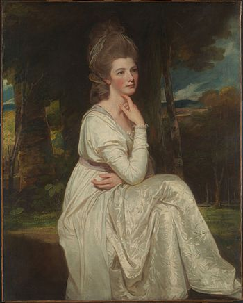

- Main Page
- Contents
- Featured Content
- Current Events
- Random Article
- Donate to Wikipedia
- Wikipedia Store
Interaction
Tools
- What links here
- Related Changes
- Upload File
- Special Pages
- Permanent Link
- Page Information
- WikiData Item
Print/export
In other projects
- Wikimedia Commons
- MediaWiki
- MetaWiki
- WikiSpecies
- WikiBooks
- WikiData
- WikiNews
- WikiQuote
- WikiSource
- WikiVersity
- Wikivoyage
Languages
- Simple English
- العربية
- Bahasa Indonesia
- Bahasa Melayu
- Bosanski
- Български
- Català
- Čeština
- Dansk
- Deutsch
- Eesti
- Ελληνικά
- Español
- Esperanto
- Euskara
- فارسی
- Français
- Galego
- 한국어
- עברית
- Hrvatski
- Italiano
- ქართული
- Latviešu
- Lietuvių
- Magyar
- Nederlands
- 日本語
- Norsk bokmål
- Norsk nynorsk
- Polski
- Português
- Română
- Русский
- Slovenčina
- Slovenščina
- Српски / srpski
- Srpskohrvatski / српскохрватски
- Suomi
- Svenska
- ไทย
- Tiếng Việt
- Türkçe
- Українська
- 中文
- Complete list
From today's featured article
Ferugliotheriidae is one of three known families in the order Gondwanatheria, an enigmatic group of extinct mammals. Ferugliotheriids coexisted with dinosaurs, mainly during the Late Cretaceous epoch (84–66 million years ago) in Argentina, where they may have lived in a marshy or seashore environment. Genera in the family, including Trapalcotherium and Argentodites, are known from isolated low-crowned teeth and possibly a fragment of a lower jaw. The best-known representative of the family is Ferugliotherium windhauseni, a small mammal, around 70 g (2.5 oz), which may have eaten insects and plants. Ferugliotheriid incisors are long and procumbent and contain a band of enamel on only part of the tooth. The jaw fragment contains a long tooth socket for the incisor and bears a bladelike fourth lower premolar, resembling those of multituberculates. Low-crowned and bladelike teeth as seen in ferugliotheriids may have been evolutionary precursors of the high-crowned teeth of the family Sudamericidae. (Full article...)
Did you know...
- ... that sundial cannons (example pictured) were triggered by the sun to fire at noon?
- .. that George W. Macfarlane and Robert Hoapili Baker accompanied Hawaiian King Kalākaua on his final trip to California where the king died in 1891?
- ... that during the bombing of Nagaoka in World War II, 80% of the urban area of the city burned down?
- ... that the 501(h) election allows many U.S. non-profit organizations to engage in unlimited lobbying as long as they do it cheaply?
- ... that Bill Roe made the highest score in cricket at the time when he scored 415 runs during an inter-college match at Cambridge University?
- ... that the fossil leaves of the maple species Acer whitebirdense had earlier been misattributed to the genera Viburnum, Platanus, and Rubus?
- ... that Giovanni Ambrogio Migliavacca wrote the libretto for Solimano, first set by Hasse and produced in Dresden with live elephants and camels?
In the news
- In sumo, Kisenosato Yutaka (pictured) is promoted as the 72nd yokozuna, becoming the first Japanese wrestler to earn the title in 19 years.
- The Supreme Court of the United Kingdom issues a ruling that an Act of Parliament is needed before the government can trigger Article 50 to leave the European Union.
- Tornadoes and severe thunderstorms kill at least twenty people across the Southeastern United States.
- A train derailment in Andhra Pradesh, India, kills forty-one people and injures sixty-eight others.
On this day...
- 1564 – Livonian War: A Lithuanian surprise attack resulted in a decisive defeat of the numerically superior Russian forces.
- 1808 – Governor of New South Wales William Bligh was deposed by the New South Wales Corps in the only successful armed takeover of government in Australia's recorded history.
- 1905 – The Cullinan Diamond (pictured), the largest gem-quality rough diamond ever found at 3,106.75 carats (621.350 g), was discovered at the Premier Mine in Cullinan, Gauteng, South Africa.
- 1950 – Indian independence movement: India officially became a republic under a new constitution, with Rajendra Prasad as its first president.
- 2009 – Rioting broke out in Antananarivo, Madagascar, sparking a political crisis that led to the deposal of President Marc Ravalomanana.
Today's featured picture

Elizabeth Smith-Stanley, Countess of Derby (1753–1797) was the eldest daughter of the 6th Duke of Hamilton; she married the 12th Earl of Derby in 1774. Popular among society, she became involved in a scandal when she engaged in a very public affair with the 3rd Duke of Dorset. She eventually separated from her husband, becoming effectively exiled from society, especially after it was learned that she would not be marrying the Duke. Lady Derby moved abroad, only returning once her husband attracted embarrassing press attention for his relationship with the actress Elizabeth Farren, whom he married soon after Lady Derby's death.